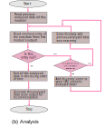
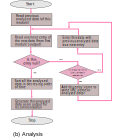

1 page:
1. Introduction:
Recommendation engines are basically information filtering tools that use
algorithms and data to recommend the most relevant items to a user in a
given context.
Like some content, a product, or even a person. Recommendations can be
powered by aggregate data, which determines the relevance of a certain item
in relation to a given context, or user specific data for personalized
recommendations.
1.1 History
Earlier, collaborative filtering has been used successfully in a number of
different applications such as recommending web pages, movies, articles and
products. Since, collaborative filtering has some major limitations,
researchers investigated to use Web mining techniques for product
recommendation.
Web usage mining is the process of applying data mining techniques to the
discovery of behavior or patterns from web data. The pattern discovery tasks
include the discovery of association rules, sequential patterns, usage
clusters, page clusters, user classifications or any other pattern discovery
method.
1.2 Actual recommendation not fake feedback
Major quality of a recommendation system is that it should avoid fake inputs
for the algorithm in predicion. In case of comparitively less number of
inputs, fake inputs can prove to be dangerous. for example: google ratings
for a nearby place.
Recommendation systems like review-based or click-based models suffer this
loss greatly.
1.3 Advantages
-
Using a good recommendation model gives the website an upper hand in
improving its UX (user-experience).
-
This is a time-based model with predefined time-limits and hence avoids
fake inputs before processing further.
-
Ability to analyse small as well as large data sets, gives the model an
advantage over most content and user based models.
-
Quicker processing ability of the model, helps the host to take least
CPU time, avoiding server crashes in case of low resources and gives
better website performance.
Title:
2 page:
2. Types of models:
Most existing recommender systems use collaborative filtering or
content-based methods or hybrid methods that combine both techniques.
Some of such models are:-
-
Review-Based model : It takes reviews from the user about the
product/content (in form of stars or marks or text) and analyses on the
basis of this review to recommend this product/content or not.
-
Click-based model : It monitors the clicks made by a user on the
page that holds the content or product to analyse and recommend this
page accordingly.
-
Basket-analysis model : It is basically 'who bought this, also
bought this' type of model. This means, if most of some people were
interested in multiple products/contents (maybe category), and a new
user navigates to one of those products/contents, the system recommends
him/her those multiple products too.
2.1 Disadvantages of these models
Collaborative filtering methods like Review models requires explicit
and large number of user ratings for similar products, while the number of
ratings ussually obtained is very small compared to the number of ratings
that need to predict the recommendation.
Therefore, collaborative
filtering based recommendations cannot accurately identify the products to
recommend.
Click-based models, (like google ads for calculating monetisation)
are often misleading and sometimes provide false inputs when user mistakenly
clicks around, or if some content requires more clicking.
Fake inputs are also an headache for such models like putting wrong reviews
or clicking around too much on some product/content
Algorithms to find the similar customers/products/content like
Basket-analysis, usually require large number of user data, excellent
computation environment and very long computation time that too grows
linearly with both the number of customers and the number of
products/content.
Also these models need large memory to store and maintain relative data (for
each user mostly). Such heavy models cannot function in low resource
environments.
2.2 Advantages over these models
This system has some basic advantages over others because of its unique
features like time-monitoring, detecting and excluding false inputs,
data-time management.
-
User doesnt need to manually input any data. Hence, avoids any kind of
ambiguity or false inputs. Moreover, it supports website's UX for
inputs.
-
Doesn't require qualities of the content/product, hence adding or
removing some content/product(s) is easy.
-
Works good on both small and large amounts of data. Hence, applicable to
small/local websites.
-
Produces less number of files, improving time and space complexity of
overall system.
-
Doesn't require any kind of log in, unlike most of the hybrid systems.
3 page:
3. Design and implementaion of recomendation model
This model is implemented on Java by using servlets.
It mainly consists of two modules:
-
Page Monitor: This module monitors the time elapsed by user on
the client side of a web page.
-
It excludes the time in which user didnt actually see the page
(navigated to other tab or minimized etc.).
-
It checks if time elapsed is not too much than it should have been
(for avoiding fake or false inputs).
- It stores the valid and optimised data for next module.
-
Recommendation Analyser(by time): This module produces organised
list of recommendable pages.
-
It reads previous recommendation data and new data stored by the
first module(Page Monitor). And clears all the data in file produced
by first module.
-
It analyses data based on its previous experience as well as new
data and sorts it in decreasing order of time spent on each page.
-
It stores the recommended pages their data(time spent) in organised
manner for website or future updations.
3.1 Diagram: flow chart
 

(a)Monitoring: When a client is displayed a page that is being
monitored, the monitor assigns the ongoing session some attributes like url
name, time now etc. Then it waits until the page is hidden to client(like
closing/switching). When the page hides, it calculates the time
difference(time elapsed) of current time and time stored in session(initial
time). If the time elapsed is smaller than a predefing time factor then it
stores the data (url, time etc) for later use and terminates, else if
time elapsed is larger then it ignores this entry(illegal data) and
terminates.
(b)Analysis: When recommendation analysis is initiated, this module
starts. It reads previously recommended(or analysed) data by this module.
Then it reads one entry from the output generated by the first
module(Monitor) and terminates. If this entry is null(no data exists)
it sorts and generates the analysed data as recommendation output.
Otherwise, if the entry is not null(data available) it checks if the URL of
this data is already available or not. If yes then it adds the time elapsed
in this new data to previous recommended one where URL is same as this
entry's URL, now it again reads next entry from new data set and repeats
this process. Else if this URL is not present in our old data, it considers
it as a new row(entry) to our old data, and hence it attaches whole data of
this new entry into the old collection. Now it again reads next entry in the
new dataset and repeats the process.
3.2 Algorthim used:
-
Monitoring
- Start (page displayed).
- Store current URL and Time.
- Wait until page is being displayed.
-
Find time elapsed(time difference) between time now and stored time.
- Check if time elapsed is not too long and is valid.
-
If time is valid, store all data(URL and time elapsed) on the server
for future use.
- Stop.
-
Analysis
- Start.
- Read all previously recommended data(old data).
-
Read one(next) entry from first module's stored data(new data)
- Check if data is null
- if data is null, go to step 10
-
if data is not null, check if URL of the new data is already present
in old data.
-
if same URL present, add time of new data's entry to time of old
data where URL is same.
-
if same URL is absent, store URL and time of this new data into old
data as an entry.
- Repeat steps 3 to 8 until step 5 gets true.
- Sort all the stored data in decreasing order of time.
-
Store this analysed data, and generate it as the
output/recommendation.
- Stop.
Conclusion: no log in required, genuine recommendation.